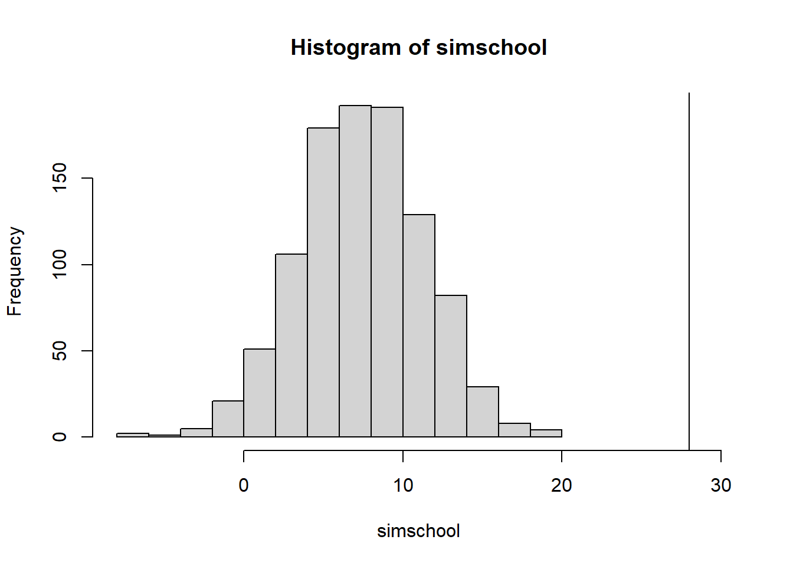
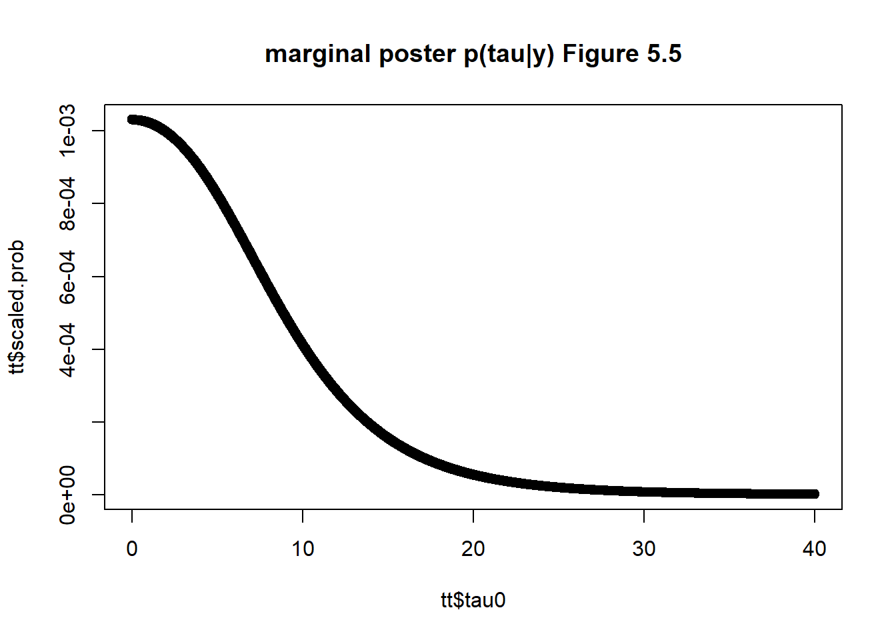

Chapter 7 Exchangeability and hierarchical models
Consider a set of experiments j=1,…,J in which j has the data \(y_j\) and parameter \(\theta_j\) with likelihood \(p(y_j|\theta_j)\). Let \(\theta_j \sim N(\mu_j,\sigma^2)\) come from a superpopulation with common fixed variance.
Exchangeability
If no information, other than the data \(y_j\) is availble to distinguish any of the \(\theta_j\) from any others, and no ordering or grouping of parameters can be made, then by symmetry among the parameters called exchangeability. The joint distribution \(p(\theta_1,...,\theta_J)\) is invariant to permutations of the indices (1,…,J). Generally, the less we know about a problem the more we can rely on the exchangeability assumption.
The form of exchangeabile distribution each parameter \(\theta_j\) as an independent sample from a prior population distribution governed by some unknown \(\phi\) is written as
\[\begin{equation} p(\theta|\phi) = \prod_j p(\theta_j| \phi) \end{equation}\]
in general \(\phi\) is unknown so we average over the uncertainty of \(\phi\)
\[\begin{equation} p(\theta) = \int \prod_j p(\theta_j| \phi)* p(\phi)d\phi \end{equation}\]
This form is the mixture of independent identical distributions.
A related result de Finetti’s theorem states that as the limit of \(J\to \infty\) any suitably exchangeable distribution on (\(\theta_1,...,\theta_J)\) can be expressed as a mixture of identical and independent distributions. This theorem connects exchangeability to IID assumptions routinely practiced.
Exercises
Q1
A box has 1 black and 1 white ball
- a i) pick 1 ball, y1, return it, and draw another y2. This is exchangeable, because other than y1, we have no information about what the draw y2 could be.
- a ii) we have independence by replacement
- a iii) since the draws are identical, then y1 and y2 are both independent draws and the pair of draws can be independent.
-b i) drawing without replacement, y1 is not exchangeable because given y1 color, we know what y2 color is. -b ii) not independent -b iii) as a pair independent (RB) independent of a second pair (BR) with order then the order RB is independent of BR if order matters.
-c i) if there were a million balls, then due to large numbers this is an exchangeable and independent process.
Q2
For unknown model parameters (a) we have total of n black and white balls, then this is an exchangeable and independent process. (b) due to ignorance we have exchangeability, but we do not have independence since this is without replacement. (c) if we know how many colors balls there are then this is not an exchangeable process and not independent process for finite n. For large n, then we can assume independence and exchangeability.
Q3
all 8 parameters are estimated from sampling from the posterior \(p(\tau | y)\), for ease of data wrangling, we obtain the quantiles for each theta separately. but in each posterior estimation, all points are simulataneously estimated.
This reproduces Table 5.3 from the text.
school<-data.frame(school=LETTERS[1:8],
yj =c(28,8,-3,7,-1,1,18,12),
sigmaj = c(15,10,16,11,9,11,10,18))
school$sigma2j<-school$sigmaj^2
## reproducing section 5.5 on pooling
## pooled
ybar_pool<-sum(school$yj/school$sigmaj^2)/sum(1/school$sigmaj^2)
pool_var<-1/sum(1/school$sigmaj^2)
ybar_pool+2*sqrt(pool_var) # 15.82946## [1] 15.82946 ybar_pool-2*sqrt(pool_var) ## -0.5## [1] -0.4582216 ## classical test
sum( (school$yj-mean(school$yj))^2/school$sigmaj^2) ## 4.7 which is less than the X2 d.f (8) so MSB- MSW is negative. pooling is not appropriate.## [1] 4.775407 ## checking to see if 28 is from the pooled population
simschool <-rnorm(1000, mean= ybar_pool, sd=sqrt(pool_var))
hist(simschool,xlim=c(-8,30))
abline(v=max(school$yj ))
### the maximum observation School A = 28 points is not with the population, so pooling does not correct
###
## posterior simulation under a normal model
## yij | thetaj ~ N(thetaj, sigma^2)
## likelihood using sufficient statistics
## ybarj | thetaj ~ N(thetaj, sigmaj^2)
### prior on tau can follow a uniform distribution
## using a grid approach for tau
tau0= seq(0,40,by=0.01)
stepsize=0.01
# 5.20 total precision
vmu.inverse<-function(tau2,sigma2j){
sum(1/(sigma2j+tau2))
}
vmu<-sapply(tau0^2,function(x) vmu.inverse(x,school$sigmaj^2))
# total mean effect
muhat<-function(ybarj, sigma2j,tau2){
numer<- sum(ybarj/(sigma2j+tau2))
denom<- sum( 1/(sigma2j+tau2))
hat<- numer/denom
return(hat)
}
## marginal posterior distribution p(tau| y) 5.21
marginal.posterior.tau<-function(tau,sigma2j,ybarj){
tau2<-tau^2
prob.tau<-dunif(tau,min=0,max=40) ## assuming unif prior
vmu.inv<-vmu.inverse(tau2,sigma2j)
vmu<-sqrt(1/vmu.inv)
total.precision<-1/(sigma2j+tau2)
group.precision.term<- sqrt(total.precision)
group.mu<-muhat(ybarj,sigma2j,tau2)
exp.term<- exp(-1*(ybarj -group.mu )^2/(2*(sigma2j+tau2)))
group.prod<-prod( group.precision.term*exp.term)
final<- prob.tau*vmu*group.prod
return(final)
}
tt<-data.frame(tau0,pt=sapply(tau0,function(x) marginal.posterior.tau(x,school$sigma2j,school$yj)))
tt$scaled.prob<-tt$pt/sum(tt$pt)
plot(tt$tau0,tt$scaled.prob, main='marginal poster p(tau|y) Figure 5.5')
## prior on tau can follow a scaled inverse-X2(n-1,s^2) distribution
## alternatively we can use scaled inverse
## now that we have the distribution of tau, sample from it
## marginal posterior 5.19
muhat_given_tau.y<-sapply(tau0,function(x) muhat(school$yj,school$sigma2j,x^2))
vmu_given_tau.y<-1/(sapply(tau0^2,function(x) vmu.inverse(x,school$sigmaj^2)))
### FIX ME: sample mu
# equation 5.20
marginal.post.mu_given_tau.y<-function(yj,sigma2j,tau2){
muhat<-muhat(yj,sigma2j,tau2)
## precision term
vmu<-vmu.inverse(tau2,sigma2j)
mu<- rnorm(100,mean=muhat,sd=sqrt(1/vmu)) ## how many points per posterior tau
## we take the posterior mean given 1 value of tau
prob.mu<-dnorm(mean(mu),mean=muhat,sd=sqrt(1/vmu))
return( data.frame(mu=mean(mu),prob.mu=prob.mu))
}
## given mu, sample theta j
## conditional posterior for each theta j
## eq 5.17
conditional.posterior.thetaj<-function(yj,sigma2j,tau2,mu){
thetajhat<-(yj/sigma2j + mu/tau2)/(1/sigma2j+1/tau2)
vj<-1/((1/sigma2j)+(1/tau2))
nj<-length(thetajhat)
thetaj<- sapply(seq(1,nj),function(x) rnorm(1, thetajhat[x], sd=sqrt(vj)[x]))
prob.thetaj<-numeric(nj)
prob.thetaj<- sapply(seq(1,nj),function(x) dnorm(thetaj[x], mean=thetajhat[x], sd=sqrt(vj)[x]))
return( data.frame(thetaj=(thetaj),prob.thetaj=prob.thetaj))
}
posterior<-function(tau,sigma2j,yj){
tau2<-tau^2
post.tau<-marginal.posterior.tau(tau,sigma2j,yj)
post.mu<-marginal.post.mu_given_tau.y(yj,sigma2j,tau2)
post.theta<-conditional.posterior.thetaj(yj,sigma2j,tau2,post.mu$mu)
full.post<-data.frame(theta=post.theta$thetaj,pdf=post.tau*post.mu$prob.mu*post.theta$prob.thetaj)
return(full.post)
}
## simulate the effects of thetaj
## closely reproduces table 5.3 in section 5
theta1<- sapply(sample(tt$tau0,1000,prob=tt$scaled.prob),
function(x) posterior(x,school$sigma2j,school$yj)[1,1])## Warning in rnorm(1, thetajhat[x], sd = sqrt(vj)[x]): NAs produced
## Warning in rnorm(1, thetajhat[x], sd = sqrt(vj)[x]): NAs produced
## Warning in rnorm(1, thetajhat[x], sd = sqrt(vj)[x]): NAs produced
## Warning in rnorm(1, thetajhat[x], sd = sqrt(vj)[x]): NAs produced
## Warning in rnorm(1, thetajhat[x], sd = sqrt(vj)[x]): NAs produced
## Warning in rnorm(1, thetajhat[x], sd = sqrt(vj)[x]): NAs produced
## Warning in rnorm(1, thetajhat[x], sd = sqrt(vj)[x]): NAs produced
## Warning in rnorm(1, thetajhat[x], sd = sqrt(vj)[x]): NAs produced theta1[is.nan(theta1)]<-mean(theta1[!is.nan(theta1)])
t1q<-quantile(theta1,c(0.025,0.25,0.5,0.75,0.975),na.rm=TRUE)
theta2<- sapply(sample(tt$tau0,1000,prob=tt$scaled.prob),
function(x) posterior(x,school$sigma2j,school$yj)[2,1])## Warning in rnorm(1, thetajhat[x], sd = sqrt(vj)[x]): NAs produced
## Warning in rnorm(1, thetajhat[x], sd = sqrt(vj)[x]): NAs produced
## Warning in rnorm(1, thetajhat[x], sd = sqrt(vj)[x]): NAs produced
## Warning in rnorm(1, thetajhat[x], sd = sqrt(vj)[x]): NAs produced
## Warning in rnorm(1, thetajhat[x], sd = sqrt(vj)[x]): NAs produced
## Warning in rnorm(1, thetajhat[x], sd = sqrt(vj)[x]): NAs produced
## Warning in rnorm(1, thetajhat[x], sd = sqrt(vj)[x]): NAs produced
## Warning in rnorm(1, thetajhat[x], sd = sqrt(vj)[x]): NAs produced theta2[is.nan(theta2)]<-mean(theta2[!is.nan(theta2)])
t2q<-quantile(theta2,c(0.025,0.25,0.5,0.75,0.975),na.rm=TRUE)
theta3<- sapply(sample(tt$tau0,1000,prob=tt$scaled.prob),
function(x) posterior(x,school$sigma2j,school$yj)[3,1])## Warning in rnorm(1, thetajhat[x], sd = sqrt(vj)[x]): NAs produced
## Warning in rnorm(1, thetajhat[x], sd = sqrt(vj)[x]): NAs produced
## Warning in rnorm(1, thetajhat[x], sd = sqrt(vj)[x]): NAs produced
## Warning in rnorm(1, thetajhat[x], sd = sqrt(vj)[x]): NAs produced
## Warning in rnorm(1, thetajhat[x], sd = sqrt(vj)[x]): NAs produced
## Warning in rnorm(1, thetajhat[x], sd = sqrt(vj)[x]): NAs produced
## Warning in rnorm(1, thetajhat[x], sd = sqrt(vj)[x]): NAs produced
## Warning in rnorm(1, thetajhat[x], sd = sqrt(vj)[x]): NAs produced theta3[is.nan(theta3)]<-mean(theta3[!is.nan(theta3)])
t3q<-quantile(theta3,c(0.025,0.25,0.5,0.75,0.975),na.rm=TRUE)
theta4<- sapply(sample(tt$tau0,1000,prob=tt$scaled.prob),
function(x) posterior(x,school$sigma2j,school$yj)[4,1])## Warning in rnorm(1, thetajhat[x], sd = sqrt(vj)[x]): NAs produced
## Warning in rnorm(1, thetajhat[x], sd = sqrt(vj)[x]): NAs produced
## Warning in rnorm(1, thetajhat[x], sd = sqrt(vj)[x]): NAs produced
## Warning in rnorm(1, thetajhat[x], sd = sqrt(vj)[x]): NAs produced
## Warning in rnorm(1, thetajhat[x], sd = sqrt(vj)[x]): NAs produced
## Warning in rnorm(1, thetajhat[x], sd = sqrt(vj)[x]): NAs produced
## Warning in rnorm(1, thetajhat[x], sd = sqrt(vj)[x]): NAs produced
## Warning in rnorm(1, thetajhat[x], sd = sqrt(vj)[x]): NAs produced theta4[is.nan(theta4)]<-mean(theta4[!is.nan(theta4)])
t4q<- quantile(theta4,c(0.025,0.25,0.5,0.75,0.975),na.rm=TRUE)
theta5<- sapply(sample(tt$tau0,1000,prob=tt$scaled.prob),
function(x) posterior(x,school$sigma2j,school$yj)[5,1])## Warning in rnorm(1, thetajhat[x], sd = sqrt(vj)[x]): NAs produced
## Warning in rnorm(1, thetajhat[x], sd = sqrt(vj)[x]): NAs produced
## Warning in rnorm(1, thetajhat[x], sd = sqrt(vj)[x]): NAs produced
## Warning in rnorm(1, thetajhat[x], sd = sqrt(vj)[x]): NAs produced
## Warning in rnorm(1, thetajhat[x], sd = sqrt(vj)[x]): NAs produced
## Warning in rnorm(1, thetajhat[x], sd = sqrt(vj)[x]): NAs produced
## Warning in rnorm(1, thetajhat[x], sd = sqrt(vj)[x]): NAs produced
## Warning in rnorm(1, thetajhat[x], sd = sqrt(vj)[x]): NAs produced theta5[is.nan(theta5)]<-mean(theta5[!is.nan(theta5)])
t5q<- quantile(theta5,c(0.025,0.25,0.5,0.75,0.975),na.rm=TRUE)
theta6<- sapply(sample(tt$tau0,1000,prob=tt$scaled.prob),
function(x) posterior(x,school$sigma2j,school$yj)[6,1])## Warning in rnorm(1, thetajhat[x], sd = sqrt(vj)[x]): NAs produced
## Warning in rnorm(1, thetajhat[x], sd = sqrt(vj)[x]): NAs produced
## Warning in rnorm(1, thetajhat[x], sd = sqrt(vj)[x]): NAs produced
## Warning in rnorm(1, thetajhat[x], sd = sqrt(vj)[x]): NAs produced
## Warning in rnorm(1, thetajhat[x], sd = sqrt(vj)[x]): NAs produced
## Warning in rnorm(1, thetajhat[x], sd = sqrt(vj)[x]): NAs produced
## Warning in rnorm(1, thetajhat[x], sd = sqrt(vj)[x]): NAs produced
## Warning in rnorm(1, thetajhat[x], sd = sqrt(vj)[x]): NAs produced theta6[is.nan(theta6)]<-mean(theta6[!is.nan(theta6)])
t6q<-quantile(theta6,c(0.025,0.25,0.5,0.75,0.975),na.rm=TRUE)
theta7<- sapply(sample(tt$tau0,1000,prob=tt$scaled.prob),
function(x) posterior(x,school$sigma2j,school$yj)[7,1])
theta7[is.nan(theta7)]<-mean(theta7[!is.nan(theta7)])
t7q<-quantile(theta7,c(0.025,0.25,0.5,0.75,0.975),na.rm=TRUE)
theta8<- sapply(sample(tt$tau0,1000,prob=tt$scaled.prob),
function(x) posterior(x,school$sigma2j,school$yj)[8,1])## Warning in rnorm(1, thetajhat[x], sd = sqrt(vj)[x]): NAs produced
## Warning in rnorm(1, thetajhat[x], sd = sqrt(vj)[x]): NAs produced
## Warning in rnorm(1, thetajhat[x], sd = sqrt(vj)[x]): NAs produced
## Warning in rnorm(1, thetajhat[x], sd = sqrt(vj)[x]): NAs produced
## Warning in rnorm(1, thetajhat[x], sd = sqrt(vj)[x]): NAs produced
## Warning in rnorm(1, thetajhat[x], sd = sqrt(vj)[x]): NAs produced
## Warning in rnorm(1, thetajhat[x], sd = sqrt(vj)[x]): NAs produced
## Warning in rnorm(1, thetajhat[x], sd = sqrt(vj)[x]): NAs produced theta8[is.nan(theta8)]<-mean(theta8[!is.nan(theta8)])
t8q<-quantile(theta8,c(0.025,0.25,0.5,0.75,0.975),na.rm=TRUE)
allq<-rbind(t1q,t2q,t3q,t4q,t5q,t6q,t7q,t8q)
print(allq)## 2.5% 25% 50% 75% 97.5%
## t1q 0.4457383 7.326460 10.017273 16.091238 33.37148
## t2q -3.9503168 4.831116 7.726473 10.619370 20.25554
## t3q -14.8226207 2.859082 6.858540 9.538431 18.57518
## t4q -7.3115433 5.009563 7.783060 10.934833 21.04213
## t5q -9.4629862 1.658382 6.024443 8.293584 14.69150
## t6q -10.7831533 2.029477 6.586762 8.797824 17.50866
## t7q 0.9487190 7.244206 9.623687 14.367122 25.85331
## t8q -7.3113309 4.974897 7.888110 11.282060 27.24911i could not figure out how to take the margin across \(\mu\) for 5.6 and 5.7.
we found that our posterior effects had 4\(\%\) greater than the maximum observed value 28.4 whereas the text found 22/200 which is slightly larger from 200 simulations, we used 1,000.
abest<-table(theta1>(theta2) & theta1>theta3 & theta1>theta4 & theta1>theta5 & theta1>theta6 & theta1>theta7 &theta1>theta8)
bbest<-table(theta2>(theta1) & theta2>theta3 & theta2>theta4 & theta2>theta5 & theta2>theta6 & theta2>theta7 &theta2>theta8)
cbest<-table(theta3>(theta1) & theta3>theta2 & theta3>theta4 & theta3>theta5 & theta3>theta6 & theta3>theta7 &theta3>theta8)
dbest<-table(theta4>(theta1) & theta4>theta2 & theta4>theta3 & theta4>theta5 & theta4>theta6 & theta4>theta7 &theta4>theta8)
ebest<-table(theta5>(theta1) & theta5>theta2 & theta5>theta3 & theta5>theta4 & theta5>theta6 & theta5>theta7 &theta5>theta8)
fbest<-table(theta6>(theta1) & theta6>theta2 & theta6>theta3 & theta6>theta4 & theta6>theta5 & theta6>theta7 &theta6>theta8)
gbest<-table(theta7>(theta1) & theta7>theta2 & theta7>theta3 & theta7>theta4 & theta7>theta6 & theta7>theta6 &theta7>theta8)
hbest<-table(theta8>(theta1) & theta8>theta2 & theta8>theta3 & theta8>theta4 & theta8>theta5 & theta8>theta6 &theta8>theta7)
a<-abest['TRUE']/sum(abest)
b<-bbest['TRUE']/sum(bbest)
c<-cbest['TRUE']/sum(cbest)
d<-dbest['TRUE']/sum(dbest)
e<-ebest['TRUE']/sum(ebest)
f<-fbest['TRUE']/sum(fbest)
g<-gbest['TRUE']/sum(gbest)
h<-hbest['TRUE']/sum(hbest)- 5.3a this is correct and is very close to section 5 results.
better<-matrix(0,nrow=8,ncol=8)
fillIn<-function(better,theta1,theta2,i=1,j=2){
pij<-table(theta1>theta2)/sum(table(theta1>theta2))
better[i,j]<-pij['TRUE']
return(better)
}
better<-fillIn(better,theta1,theta2,i=1,j=2)
better<-fillIn(better,theta1,theta3,i=1,j=3)
better<-fillIn(better,theta1,theta4,i=1,j=4)
better<-fillIn(better,theta1,theta5,i=1,j=5)
better<-fillIn(better,theta1,theta6,i=1,j=6)
better<-fillIn(better,theta1,theta7,i=1,j=7)
better<-fillIn(better,theta1,theta8,i=1,j=8)
better<-fillIn(better,theta2,theta1,i=2,j=1)
better<-fillIn(better,theta2,theta3,i=2,j=3)
better<-fillIn(better,theta2,theta4,i=2,j=4)
better<-fillIn(better,theta2,theta5,i=2,j=5)
better<-fillIn(better,theta2,theta6,i=2,j=6)
better<-fillIn(better,theta2,theta7,i=2,j=7)
better<-fillIn(better,theta2,theta8,i=2,j=8)
better<-fillIn(better,theta3,theta1,i=3,j=1)
better<-fillIn(better,theta3,theta2,i=3,j=2)
better<-fillIn(better,theta3,theta4,i=3,j=4)
better<-fillIn(better,theta3,theta5,i=3,j=5)
better<-fillIn(better,theta3,theta6,i=3,j=6)
better<-fillIn(better,theta3,theta7,i=3,j=7)
better<-fillIn(better,theta3,theta8,i=3,j=8)
better<-fillIn(better,theta4,theta1,i=4,j=1)
better<-fillIn(better,theta4,theta2,i=4,j=2)
better<-fillIn(better,theta4,theta3,i=4,j=3)
better<-fillIn(better,theta4,theta5,i=4,j=5)
better<-fillIn(better,theta4,theta6,i=4,j=6)
better<-fillIn(better,theta4,theta7,i=4,j=7)
better<-fillIn(better,theta4,theta8,i=4,j=8)
better<-fillIn(better,theta5,theta1,i=5,j=1)
better<-fillIn(better,theta5,theta2,i=5,j=2)
better<-fillIn(better,theta5,theta3,i=5,j=3)
better<-fillIn(better,theta5,theta4,i=5,j=4)
better<-fillIn(better,theta5,theta6,i=5,j=6)
better<-fillIn(better,theta5,theta7,i=5,j=7)
better<-fillIn(better,theta5,theta8,i=5,j=8)
better<-fillIn(better,theta6,theta1,i=6,j=1)
better<-fillIn(better,theta6,theta2,i=6,j=2)
better<-fillIn(better,theta6,theta3,i=6,j=3)
better<-fillIn(better,theta6,theta4,i=6,j=4)
better<-fillIn(better,theta6,theta5,i=6,j=5)
better<-fillIn(better,theta6,theta7,i=6,j=7)
better<-fillIn(better,theta6,theta8,i=6,j=8)
better<-fillIn(better,theta7,theta1,i=7,j=1)
better<-fillIn(better,theta7,theta2,i=7,j=2)
better<-fillIn(better,theta7,theta3,i=7,j=3)
better<-fillIn(better,theta7,theta4,i=7,j=4)
better<-fillIn(better,theta7,theta5,i=7,j=5)
better<-fillIn(better,theta7,theta6,i=7,j=6)
better<-fillIn(better,theta7,theta8,i=7,j=8)
better<-fillIn(better,theta8,theta1,i=8,j=1)
better<-fillIn(better,theta8,theta2,i=8,j=2)
better<-fillIn(better,theta8,theta3,i=8,j=3)
better<-fillIn(better,theta8,theta4,i=8,j=4)
better<-fillIn(better,theta8,theta5,i=8,j=5)
better<-fillIn(better,theta8,theta6,i=8,j=6)
better<-fillIn(better,theta8,theta7,i=8,j=7)
better<-cbind(c(a,b,c,d,e,f,g,h),better)
rownames(better)<-LETTERS[1:8]
colnames(better)<-c("best",LETTERS[1:8])
print(better)## best A B C D E F G H
## A 0.290 0.000 0.671 0.714 0.662 0.783 0.752 0.533 0.633
## B 0.102 0.329 0.000 0.570 0.503 0.634 0.620 0.343 0.487
## C 0.074 0.286 0.430 0.000 0.425 0.556 0.526 0.306 0.417
## D 0.100 0.338 0.497 0.575 0.000 0.636 0.601 0.358 0.482
## E 0.040 0.217 0.366 0.444 0.364 0.000 0.467 0.220 0.346
## F 0.047 0.248 0.380 0.474 0.399 0.533 0.000 0.249 0.377
## G 0.229 0.467 0.657 0.694 0.642 0.780 0.751 0.000 0.609
## H 0.124 0.367 0.513 0.583 0.518 0.654 0.623 0.391 0.000Inference on the \(P(max(\theta_j)>28.4)\) in our data is 93/1000 which is 0.093. from the text 22/200 which is roughly 0.11
theta<-data.frame(theta1,theta2,theta3,theta4,theta5,theta6,theta7,theta8)
hist(apply(theta,1,max),xlim=c(0,60),main='Figure 5.8b max(theta j)')
table(apply(theta,1,max)>28.4)['TRUE']/sum(table(apply(theta,1,max)>28.4))## TRUE
## 0.088- 5.3.b taking \(\tau \to \infty\) we have \(\theta_j \sim N(y_j, \sigma^2_j)\)
For $P(_i > _j) = \(P(\theta_i - \theta_j>0\))
x1<-rnorm(1000,mean=school$yj[1],sd=school$sigmaj[1])
x2<-rnorm(1000,mean=school$yj[2],sd=school$sigmaj[2])
x3<-rnorm(1000,mean=school$yj[3],sd=school$sigmaj[3])
x4<-rnorm(1000,mean=school$yj[4],sd=school$sigmaj[4])
x5<-rnorm(1000,mean=school$yj[5],sd=school$sigmaj[5])
x6<-rnorm(1000,mean=school$yj[6],sd=school$sigmaj[6])
x7<-rnorm(1000,mean=school$yj[7],sd=school$sigmaj[7])
x8<-rnorm(1000,mean=school$yj[8],sd=school$sigmaj[8])
allQ<-rbind( quantile(x1,c(0.025,0.25,0.5,0.75,0.975)),
quantile(x2,c(0.025,0.25,0.5,0.75,0.975)),
quantile(x3,c(0.025,0.25,0.5,0.75,0.975)),
quantile(x4,c(0.025,0.25,0.5,0.75,0.975)),
quantile(x5,c(0.025,0.25,0.5,0.75,0.975)),
quantile(x6,c(0.025,0.25,0.5,0.75,0.975)),
quantile(x7,c(0.025,0.25,0.5,0.75,0.975)),
quantile(x8,c(0.025,0.25,0.5,0.75,0.975))
)
rownames(allQ)<-LETTERS[1:8]
## pair wise
better2<-matrix(0,nrow=8,ncol=8)
for(i in 1:8){
for(j in 1:8){
better2[i,j]<- pnorm( (school$yj[i]- school$yj[j])/sqrt( school$sigma2j[i]+school$sigma2j[j]) )
}
}
allind<-cbind(x1,x2,x3,x4,x5,x6,x7,x8)
x1b<-table(x1>=apply(allind,1,max))['TRUE']/1000
x2b<-table(x2>=apply(allind,1,max))['TRUE']/1000
x3b<-table(x3>=apply(allind,1,max))['TRUE']/1000
x4b<-table(x4>=apply(allind,1,max))['TRUE']/1000
x5b<-table(x5>=apply(allind,1,max))['TRUE']/1000
x6b<-table(x6>=apply(allind,1,max))['TRUE']/1000
x7b<-table(x7>=apply(allind,1,max))['TRUE']/1000
x8b<-table(x8>=apply(allind,1,max))['TRUE']/1000
sep.prob<- cbind(c(x1b,x2b,x3b,x4b,x5b,x6b,x7b,x8b),better2)
rownames(sep.prob)<-LETTERS[1:8]
colnames(sep.prob)<-c("best",LETTERS[1:8])
print(sep.prob)## best A B C D E F G
## A 0.554 0.50000000 0.8663713 0.9212424 0.8705441 0.9513231 0.9266837 0.71045013
## B 0.034 0.13362875 0.5000000 0.7200530 0.5268155 0.7482410 0.6811336 0.23975006
## C 0.023 0.07875756 0.2799470 0.5000000 0.3032674 0.4566223 0.4183914 0.13285469
## D 0.029 0.12945588 0.4731845 0.6967326 0.5000000 0.7132410 0.6501386 0.22966818
## E 0.004 0.04867694 0.2517590 0.5433777 0.2867590 0.5000000 0.4440458 0.07893687
## F 0.017 0.07331631 0.3188664 0.5816086 0.3498614 0.5559542 0.5000000 0.12640645
## G 0.174 0.28954987 0.7602499 0.8671453 0.7703318 0.9210631 0.8735935 0.50000000
## H 0.165 0.24734659 0.5770127 0.7333055 0.5936804 0.7408523 0.6989733 0.38537815
## H
## A 0.7526534
## B 0.4229873
## C 0.2666945
## D 0.4063196
## E 0.2591477
## F 0.3010267
## G 0.6146218
## H 0.5000000- 5.3.c Discussing the differences the intervals are much wider in the separate models for \(\theta_j\) compared to the Bayesian model. This is because the Bayesian model borrows strenghts of associaton across other school information.
Under separate model, the probability that A is best is approxmiately 0.521, whereas in Bayesian model it is 0.283. These inferences are more conservative in the Bayesian model because it incorporates uncertainty in the model. The Bayesian model assumes a uniform prior for \(\tau\) which is the deviation/variability of the school coaching effectiveness, whereas in the separate model operates under the assumption that there is large variability of coaching effectiveness \(\tau = \infty\).
print(allQ)## 2.5% 25% 50% 75% 97.5%
## A -1.6671674 16.8008160 28.4378866 38.292573 56.64421
## B -11.7881530 1.4666970 7.8338828 15.011281 25.71342
## C -32.9503177 -13.1854338 -2.8801841 8.302523 27.71221
## D -13.2036155 0.6344413 7.8860750 14.677863 28.52870
## E -18.8775183 -6.4175582 -0.3387703 5.609494 16.85795
## F -20.2917461 -6.9974197 0.9482539 8.851298 22.31686
## G -0.9984314 11.3323360 17.5468144 24.429637 35.98980
## H -21.8486938 -0.4152265 12.2354066 23.914510 45.65002print(allq)## 2.5% 25% 50% 75% 97.5%
## t1q 0.4457383 7.326460 10.017273 16.091238 33.37148
## t2q -3.9503168 4.831116 7.726473 10.619370 20.25554
## t3q -14.8226207 2.859082 6.858540 9.538431 18.57518
## t4q -7.3115433 5.009563 7.783060 10.934833 21.04213
## t5q -9.4629862 1.658382 6.024443 8.293584 14.69150
## t6q -10.7831533 2.029477 6.586762 8.797824 17.50866
## t7q 0.9487190 7.244206 9.623687 14.367122 25.85331
## t8q -7.3113309 4.974897 7.888110 11.282060 27.24911- 5.3 d setting \(\tau =0\) creates \(\theta_j | \mu, \tau, y \sim N(\infty, 0)\) because of the equation for \(\hat{\theta_j} = \infty/\infty\) and \(V_j = 1/\infty =0\). the inferences for posterior for \(\mu | \tau, y\) and \(\tau | y\) are not degenerate. but for the parameters for \(\theta\) these are degenerate. Setting \(\tau =0\) means that the variance parameter goes to 0, which reduces all points to a point mass, and sets them equal (0 variability).